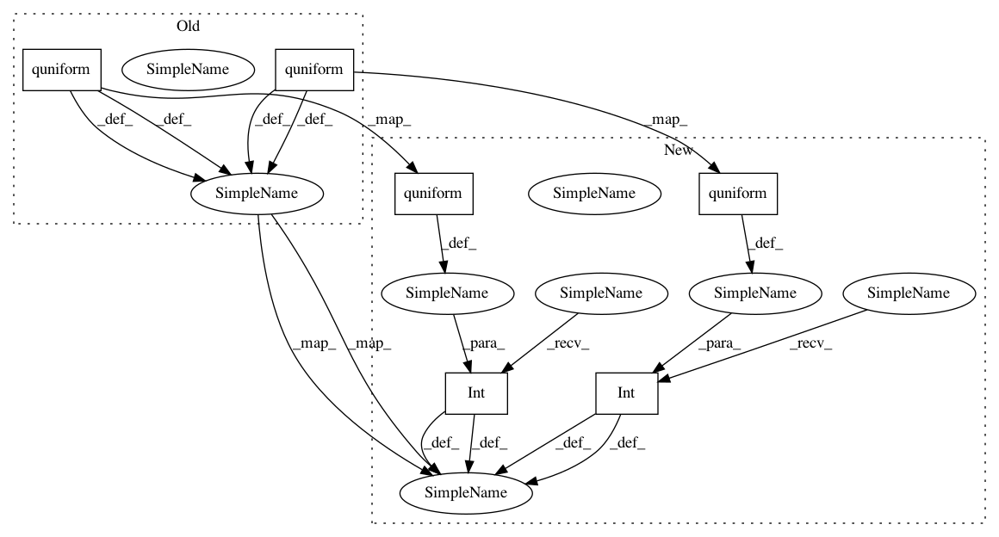

c684570dffed1f54d0afd5ef4b6ff44e2ddad9e5,hpsklearn/components.py,,decision_tree,#,997
Before Change
def _name(msg):
return "%s.%s_%s" % (name, "sgd", msg)
rval = scope.sklearn_DecisionTreeClassifier(
criterion=hp.choice(
_name("criterion"),
["gini", "entropy"]) if criterion is None else criterion,
splitter=hp.choice(
_name("splitter"),
["best", "random"]) if splitter is None else splitter,
max_features=hp.choice(
_name("max_features"),
["sqrt", "log2",
None]) if max_features is None else max_features,
max_depth=max_depth,
min_samples_split=hp.quniform(
_name("min_samples_split"),
1, 10, 1) if min_samples_split is None else min_samples_split,
min_samples_leaf=hp.quniform(
_name("min_samples_leaf"),
1, 5, 1) if min_samples_leaf is None else min_samples_leaf,
presort=presort,
random_state=_random_state(_name("rstate"), random_state),
)
After Change
def _name(msg):
return "%s.%s_%s" % (name, "sgd", msg)
rval = scope.sklearn_DecisionTreeClassifier(
criterion=hp.choice(
_name("criterion"),
["gini", "entropy"]) if criterion is None else criterion,
splitter=hp.choice(
_name("splitter"),
["best", "random"]) if splitter is None else splitter,
max_features=hp.choice(
_name("max_features"),
["sqrt", "log2",
None]) if max_features is None else max_features,
max_depth=max_depth,
min_samples_split=scope.int(hp.quniform(
_name("min_samples_split"),
1, 10, 1)) if min_samples_split is None else min_samples_split,
min_samples_leaf=scope.int(hp.quniform(
_name("min_samples_leaf"),
1, 5, 1)) if min_samples_leaf is None else min_samples_leaf,
presort=presort,
random_state=_random_state(_name("rstate"), random_state),
)
In pattern: SUPERPATTERN
Frequency: 3
Non-data size: 6
Instances
Project Name: hyperopt/hyperopt-sklearn
Commit Name: c684570dffed1f54d0afd5ef4b6ff44e2ddad9e5
Time: 2019-05-20
Author: brent.komer@gmail.com
File Name: hpsklearn/components.py
Class Name:
Method Name: decision_tree
Project Name: hyperopt/hyperopt-sklearn
Commit Name: c684570dffed1f54d0afd5ef4b6ff44e2ddad9e5
Time: 2019-05-20
Author: brent.komer@gmail.com
File Name: hpsklearn/components.py
Class Name:
Method Name: decision_tree
Project Name: hyperopt/hyperopt-sklearn
Commit Name: 84ae509ea986ea1bef7f946c9b540eaefe2126fb
Time: 2014-01-23
Author: james.bergstra@gmail.com
File Name: hpsklearn/components.py
Class Name:
Method Name: knn